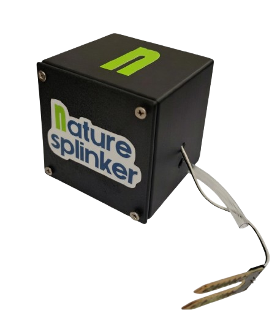

Ahorro de agua
Optimiza el consumo hídrico evitando riegos innecesarios y desperdicios.
Nature Splinker adapta el riego a cada especie vegetal en tiempo real, optimizando cada gota de agua con IA integrada.
Conoce el sistema
Sistema de riego autónomo ciberfísico basado en ESP32, con IA integrada y sensores de humedad de alta precisión. Su algoritmo inteligente analiza las necesidades hídricas en tiempo real y se adapta por especie vegetal, garantizando un riego óptimo sin intervención humana.
Precio competitivo: $800.00 MXN
Optimiza el consumo hídrico evitando riegos innecesarios y desperdicios.
Toma decisiones inteligentes en tiempo real sin intervención humana.
Protege cultivos urbanos manteniendo la humedad ideal para cada planta.
Impulsa la agricultura urbana responsable con uso eficiente de recursos.
El proyecto Nature Splinker es desarrollado por un equipo multidisciplinario del Instituto Tecnológico Superior de Progreso (TecNM Progreso), integrando conocimientos de ingeniería y administración para impulsar la producción agropecuaria inteligente y la sustentabilidad.
Ing. en Sistemas Computacionales (9.° Semestre)
Ing. en Sistemas Computacionales (9.° Semestre)
Ing. en Administración (7.° Semestre)
Ing. en Sistemas Computacionales (9.° Semestre)